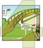
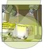
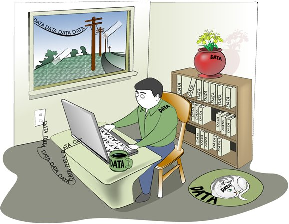
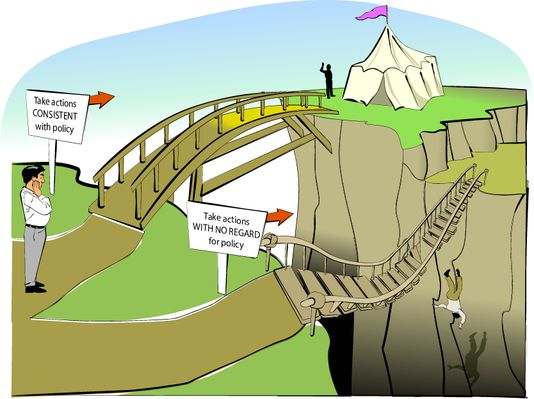
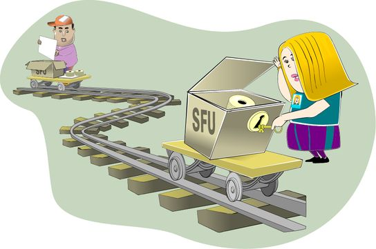
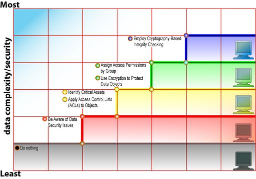

Copyright © This course contains materials from "Survivability and Information Assurance" (copyright 2005 Carnegie Mellon University) with special permission of the Software Engineering Institute at Carnegie Mellon University.
- Table of Contents
- 1. Introduction to Principles of Survivability and Information Assurance
- 2. Reading Assignments
- 3. Topics
- 4. Learning outcomes
- 5. Topics
- 6. SIA Curriculum Goals
- 7. Topics
- 8. Course introduction
- 9. Topics
- 10. The 10 SIA Principles
- 11. Principles of Survivability and Information Assurance
- 12. Principle 1 - Survivability is an enterprise-wide concern
- 13. Principle 2 - Everything is data
- 14. Principle 3 - Not all data is of equal value to an enterprise - risk must be managed
- 15. Principle 4 - Information assurance policy governs actions
- 16. Principle 5 - Identification of users, computer systems, and network infrastructure components is critical
- 17. Principle 6 - Survivable Functional Units (SFUs) are a helpful way to think about an enterprise's networks
- 18. Principle 7 - Security Knowledge in Practice (SKiP) provides a structured approach
- 19. Principle 8 - The roadmap guides implementation choices (all technology is not equal)
- 20. Principle 9 - Challenge assumptions to understand risk
- 21. Principle 10 - Communication skill is critical to reach all constituencies
- 22. Topics
- 23. Evaluation Process
- 24. Summary
- 25. EXAM
1. Introduction to Principles of Survivability and Information Assurance
This course is based on the courses "Information Security for Technical Staff", "Concepts and Trends in Information Security", "Information Security for Network Managers", and other materials developed/offered by the CERT® Training and Education group in cooperation with the Software Engineering Institute (SEI) at Carnegie Mellon University; and on the "OCTAVE® Implementation Guide, Version 0.9" and "OCTAVE Catalog of Practices, Version 2.0", published by the SEI, CERT®, and OCTAVE® are registered in the United States Patent and Trademark Office by Carnegie Mellon University.

This module provides an introduction to "Principles of Survivability and Information Assurance". It presents how the course is structured, how individual modules are structured, and the conventions used.
This module should take 1 hour.

2. Reading Assignments
Required readings:
None
Recommended readings:
1. Principles of Survivability and Information Assurance, Lawrence R. Rogers, 2004 http://www.cert.org/archive/pdf/SIAPrinciples.pdf [Rogers 04A]
3. Topics
| SIA Curriculum goals |
| Course introduction |
| SIA Principles overview |
| Evaluation process |
This is an introductory module presenting the basic goals of the SIA Curriculum and the principles to be covered in this course. It is intended to set the stage and define the intended audience.
4. Learning outcomes
"Principles of Survivability and Information Assurance"
Organization
Module topics
Module structure
Evaluation process
6. SIA Curriculum Goals
Focus
Understand security issues involved with an enterprise's networked systems
Integrate security into routine tasks
Major Topics
Principles of survivability and information assurance
Information assurance network fundamentals
Sustaining, improving, and building Survivable Functional Units (SFUs)
Focus
System/network administrators
Managers of system/network administrators (Lecture only)
Today's professional system administrators are increasingly challenged to make computer and network security a greater part of their already overflowing set of daily activities. Current workload demands can result in insufficient attention being paid to security issues and concerns, a situation that usually continues until their organization is the victim of an intrusion. After such an event, security receives an inordinate and undeserved level of attention that slowly declines over time to a level higher than previously, but still less than required. These peaks and valleys continue with each new security event until an organization integrates security into standard business processes.
System administrators can be more effective in securing computer systems and network infrastructure components if they are properly educated and trained. They need a way to think about security issues and a set of skills to help them integrate security policy, practices, and technologies into their operational infrastructure, thereby fulfilling their job responsibilities.
The SIA Curriculum is designed to teach system administrators about security, as well as, a means for integrating security into their routine tasks. The intent is to avoid most of the aforementioned peaks and valleys, producing a more secure operational state. This means that the appropriate security practices, procedures, and skills should be implemented sooner rather than later, and in a more predictable fashion.
To achieve these goals of thinking about security issues in a more deliberate way and gaining skills, the curriculum teaches how to sustain, improve, and build Survivable Functional Units (SFUs). It also provides a means to practice and demonstrate these skills, and the critical thinking process involved. Survivable Functional Units are described in detail later.
The target audience for this curriculum is a person who is seeking, or already has, a job as a system or network administrator (or related job title) requiring a background in protecting the critical information assets on computers and distributed systems and networks.
Those enrolled in this curriculum should have a minimum of two years of experience as a system administrator. They should have experience in installing and maintaining computer systems and networking infrastructure components and managing user accounts and files.
Administrators who provide management oversight of a system administrative function and a technical orientation can also benefit from this course, even if they lack the necessary technical knowledge or interest in the remaining courses of the SIA curriculum.
This curriculum teaches a new method for performing traditional systems administration tasks, and it integrates the concepts of survivability and security into those tasks. The curriculum consists of the following major topic areas:
Principles of Survivability and Information Assurance
Information Assurance Networking Fundamentals
Sustaining, Improving, and Building Survivable Functional Units (SFUs)
There is a companion lab designed to prepare students to better understand the Guided Tours and Demonstrations and to do the Exercises that are part of the "Information Assurance Networking Fundamentals" and "Sustaining, Improving, and Building Survivable Functional Units (SFUs)" courses in the SIA Curriculum. For the student proficient with the technology of the institution, this companion lab serves as a refresher or baseline for current skills.
This course is also intended for the immediate managers of the system administrators taking this course. It is important for those managers to understand the SIA principles so they can better understand and manage the system administrators working for them.
The concepts and philosophies described in the SIA Curriculum are old in some ways and new in others. For example, many traditional tasks that system administrators have done for many years now have names and an ordering as prescribed by the Security Knowledge in Practice (SKiP) method of system administration. Overt recognition and use of policies, procedures, and risk management concepts and techniques by system administrators as well as a direct connection between computer systems and network infrastructure components and the mission of the enterprise are examples of new thinking for the SA.
System administrators who change their thinking from the traditional-where system administrators were kings and queens who made computer systems and network infrastructure components "dance" to their own songs-to the modern-where system administrators make computer systems and network infrastructure components dance to the organization's tune and survive in today's world-will be the most successful and will be in high demand. The principles described in this course and repeatedly applied throughout the SIA Curriculum are what system administrators need to achieve that level of success. Their knowledge of these principles and their ability to apply them in an enterprise sets them apart from their technologically proficient and business un-savvy counterparts.
8. Course introduction
Principles is the first course
Explanations are independent of technology
Some technology examples are given
Module structure
Required readings
Recommended readings
Quizzes
Lecture
Exam
"Principles of Survivability and Information Assurance" is the first course in the SIA Curriculum. It lays the foundation for all of the other courses in the curriculum by applying the ten principles described here and highlighted in this module to TCP/IP-based networks and to the enterprise. Much as a highway is only as sound as the roadbed upon which it was built, the enterprise is only as sound-from a survivability and information assurance perspective-as the roadbed of principles used to build it. The principles of survivability and information assurance provide a firm, modern, and realistic roadbed for today and tomorrow's enterprise computer networks.
This course presents the ten principles of survivability and information assurance in detail. They are presented in a technology-independent way. It is of utmost importance for system administrators to grasp the fundamental issues of these principles independent of instances of technology that apply to them. The reason for this approach is that all too often system administrators view the set of problems they face and the solutions to those problems through the eyes of the technologies they know. This technology-constrained perspective limits the space of problems and issues that a system administrator can see.
Instead, a system administrator should always seek the fundamental issues of the problems that confront them. Those fundamental issues will be variations on the ten principles described in this course. Once the fundamental problem is understood, then and only then should technology be applied as a solution. Therefore, the principles described here are independent of technology and you are strongly encouraged to understand them as presented. However, from time to time, applicable technologies will be highlighted where appropriate. These examples are marked with the following identifiers:
Contained between these two markers are references to instances of technology that are relevant to the discussion at hand.
"Principles of Survivability and Information Assurance" is broken into 11 modules-this introduction and one for each principle. They have the following format, in most cases:
| Required readings - In some cases there are required readings that must be read before class time. These are intended to provide a basis for discussion during the lectures for that principle. |
| Recommended readings - If you want to know more, read these as well. They give you more background on the subject of the module. They are also a little longer and more technical in nature. |
| Quiz - The next section is the quiz section. Quizzes are short and are designed to strongly encourage you to read the required readings before class time. There is enough time to do the quiz if you have done the readings. Quizzes are noted with the following graphic: |
| Quiz review - Your instructor will tell you how quizzes are graded. No matter how that's done, the important concepts of quizzes are reviewed right after the quiz so that you have a good understanding for the rest of the module. |
| Topic in depth - The next part of the module varies in length from module to module. It examines the topic of the module in more detail. |
| Exam - The last section in each module is the exam. Your instructor will advise you as to how much time you are allowed for each exam. Exams are noted with the following graphic: |
"Principles of Survivability and Information Assurance" lays the groundwork for the rest of the courses in the SIA Curriculum. It is important that you learn these principles well so that you can apply them to the network and the whole of the enterprise.
10. The 10 SIA Principles
Here are all of the principle icons and their complete statements:
Table 1.
|
|
Principle 1: Survivability is an enterprise-wide concern |
|
|
Principle 2: Everything is data |
|
|
Principle 3: Not all data is of equal value - risk must be managed |
|
 |
Principle 4: Information assurance policy governs actions |
|
 |
Principle 5: Identification of users, computer systems, and network infrastructure components is critical |
|
|
Principle 6: Survivable Functional Units (SFUs) are a helpful way to think about an enterprise's networks |
|
|
Principle 7: Security Knowledge in Practice (SKiP) provides a structured approach |
|
|
Principle 8: The road map guides implementation choices (all technology is not equal) |
|
|
Principle 9: Challenge assumptions to understand risk |
|
|
Principle 10: Communication skill is critical to reach all constituencies |
11. Principles of Survivability and Information Assurance
| Ten principles form a foundation. |
| System administrators need a basis for assessing new technologies with respect to these principles. |
| System administrators need to be aware of related topics and how they relate to other organizational roles. |
| Managers need to know what is "in scope" for the system administrators they manage. |
The SIA curriculum is based upon ten fundamental principles that are emphasized throughout each course. These principles form a foundation that extends beyond any specific technology or implementation. Technology changes over time and the education process must provide a basis for assessing new technologies as they become available. While specific technologies are used in labs and assignments, the foundational principles embodied in the curriculum are the key to meeting curriculum goals.
This course discusses topics (e.g., Risk Management, Security Policy, and Incident Handling) that require system administrator awareness but not necessarily in-depth expertise. It is important for you, as the SA, to know your job responsibilities in these topics. By understanding them, you learn what is traditionally considered "in scope" for the system administrator role. You are then better able to defer responsibilities beyond you scope to other organizational roles in an effective and professional manner.
For example, an enterprise in the early stages of formulating a security policy may give this entire task to the system administrator. Since policy formulation is an activity that should be sponsored by senior management and shared by many, assigning it solely to the system administrator will likely produce a product that neither meets business objectives nor represents all affected parties. The system administrator who knows that the process should have wide representation can attempt to guide efforts in this direction. This course describes the entire process and provides direction to the system administrator about their role within the process.
Similarly, managers also learn what tasks are in scope for the system administrators who work for them. Managers benefit because they don't assign tasks to system administrators that don't belong to system administrators. Both the manager and the system administrator have realistic expectations of their respective jobs.
As has been previously stated, the ten principles of survivability and information assurance are threaded throughout all of the courses in the SIA curriculum. To call attention to those places in the workbook where a principle is referenced, the text contains miniature versions of the principles graphics. The statement of the principle is also visually distinguished in the text.
For example, if a paragraph's topic was survivability where that principle was referenced, the statement of the principle would be shown as Principle 1: Survivability is an enterprise-wide concern and the graphic would be shown as an icon, typically to the left of the workbook text, as in this paragraph.
In this overview, we introduce the principles. Then, in the next ten modules we address each one specifically in depth so you can gain a greater understanding and be able to apply them in your daily tasks.
12. Principle 1 - Survivability is an enterprise-wide concern
Survivability, in the context of computer security, is the capability of a system to fulfill its mission in a timely manner, despite attacks, failures, or accidents. As a concept and as a practice, survivability should permeate all levels of an organization. Staff roles contribute differently to the overall goal of organizational survivability, from leadership, which makes decisions setting security policy, to system administrators, who recommend and install technology in support of survivability. An organization-wide understanding of the importance of survivability contributes to long-term growth and mission fulfillment.
Survivability permeates all levels of an enterprise, from the CEO/CIO level, where corporate direction is set, through middle management, where requests for capital are approved and the time needed to allow other levels to achieve survivability are accepted. Survivability also affects programmers, where programming for survivability is practiced, and systems administrators, where recommending and installing technology in support of survivability achieves the corporate goals.
System administrators need to know about survivability and how to engineer survivability into existing and new functional units, to the fullest extent possible. Survivability is much more real-time oriented than, for example, disaster recovery; a functional unit's constituency knows about disasters and what to expect when they occur. In contrast, intrusions and outages related to failures are typically unexpected. Organizations that do not anticipate them and plan accordingly can be adversely affected by their constituency's reactions to such an outage.
13. Principle 2 - Everything is data

Everything in and around a computer system, network infrastructure component, and an SFU is data and that this perspective is useful [Rogers 02b]. The attributes of data that need to be considered and secured are the so-called InfoSec Triad: Confidentiality, Integrity, and Availability (CIA). The places where data reside and the general techniques that should be used to protect their CIA attributes are all defined in NSTISSI 4011: National Training Standard for Information Systems Security Professionals [NST 94]. Labs and demonstrations are used in this course to reinforce these techniques.
Data exists in storage, transmission, and processing, and all of these need to be explained and demonstrated through examples and labs. In some cases, this is a bit of a leap of faith in that not all of the necessary prerequisite information may have been explained by this point in the curriculum. For example, network sniffers, access control lists, encryption, and strong integrity checking are all technologies that are used to explain the technology. These topics are addressed in more detail later in the remaining courses of the SIA curriculum.
14. Principle 3 - Not all data is of equal value to an enterprise - risk must be managed
In every organization, there are many instances of information assets or data, but not all instances are of equal value. By understanding the relative importance of each information asset to the organization's mission, the SA can direct the survivability efforts towards protecting assets based on their criticality and priority. The SIA curriculum uses information security risk evaluation to identify the most important information assets. It uses the OCTAVE® [Alberts 01a] risk evaluation method to assess the risks to information assets using a scenario built for this part of the curriculum.
System administrators need to know about risk management because the SA cannot protect all assets. Security procedures and technologies are risk mitigation techniques that need to be selected and managed to minimize risks to critical information assets. The SA needs to understand risk management concepts and practices from this perspective, as well as the grand plan and their part in it so that they can effectively execute their responsibilities. This SIA curriculum principle explains what risk evaluation is and the role played by system administrators.
15. Principle 4 - Information assurance policy governs actions

Information assurance can be understood as the information operations (IO) that protect and defend information and information systems (IS) by ensuring their availability, integrity, authentication, confidentiality, and non-repudiation. This includes providing for restoration of information systems by incorporating protection, detection, and reaction capabilities.
SA activities should be governed by organizational policies, including security policies. Such policies define acceptable and unacceptable behavior for all users including system administrators. The presence of a policy can protect an administrator; the absence can be harmful. Administrators need to understand the importance of documenting, implementing, and enforcing policies that are regularly reviewed and updated and reflect their roles.
This SIA curriculum principle looks at key principles and characteristics of an effective policy, identifies key stakeholders who need to be involved in the policy process, describes what an administrator needs to know, and includes a number of policy examples to consider.
16. Principle 5 - Identification of users, computer systems, and network infrastructure components is critical
System administrators secure access to information assets based upon user identification. The scheme an enterprise uses must have the following characteristics:
It must be reliable. The scheme must identify the same user each time it is used.
It must be strong. The scheme must not allow user impersonation. Weak schemes such as those that use a login and password pair make impersonation too easy.
It must be usable. Users ultimately have to use an identification scheme. If it is too complicated, they.ll look for ways to get around it to do their jobs, usually sacrificing security.
No matter how strong the information access technology, if it is based on weak user identification, it is effectively irrelevant. System administrators need to know that reliable, strong, and useable user identification is the foundation upon which restricting access to information assets is based. To achieve these goals, they need the appropriate technology and necessary policy to compliment that technology.
Computer systems and network infrastructure components also need to be identified in a reliable, strong, and usable manner. For example, the SA ought to know with a high degree of certainty that the computer system to which they are making a network connection is the one they believe it to be. Also, SAs must know that the information process attached to their network infrastructure are the only information process so attached, and that they have not been impersonated. Again, securing an organization requires appropriate technology and policy.
17. Principle 6 - Survivable Functional Units (SFUs) are a helpful way to think about an enterprise's networks

Survivable functional units are a collection of computer systems and network infrastructure components that deliver information assets through one or more services to various constituencies that are authenticated to the survivable functional unit. The SFU should be constructed to provide essential services in the presence of attacks and failures, and recover full services in a timely manner.
This principle elaborates on the idea that every computer system and network infrastructure component is part of a Survivable Functional Unit (SFU), and that every Functional Unit should have an architecture that describes what it looks like, accompanied by a set of questions the SA should consider when sustaining and improving existing functional units and building new ones.
The process of sustaining, improving, and building SFUs is a major objective of the SIA curriculum. Since this is a relatively new way of looking at Information Assurance, it is important to understand what an SFU is and why they are the cornerstone of a survivable network system.
A typical enterprise (business, university, or even a home network) consists of a collection of computer systems and network infrastructure components intended to help the enterprise achieve its mission. In most cases, these computer systems are connected by a network infrastructure made up of routers, firewalls, hubs, switches, wires, wireless access points, and network interface cards (NICs). The method of interconnecting an organization's computer systems and the selection of network infrastructure components can vary widely from enterprise to enterprise. Presently, there are few best practices that guide system administrators through the task of architecting and building these networks.
Each computer system and network infrastructure component in the enterprise's network has one or more roles that are achieved by providing a service to a constituency. For example, one system could provide time synchronization information to other systems in the enterprise's network.
Consider an arbitrary enterprise's network. It should be possible to group the computer systems and network infrastructure components in this network into higher-level, function-oriented entities called Functional Units. A Functional Unit (FU) is a set of one or more computer systems and network infrastructure components that provide a service to a constituency.
In the best case, each computer system or network infrastructure component should be a member of only one Functional Unit. Pragmatically, this is often not the case, primarily for economic reasons. There is usually some overlap when a system provides more than one service and therefore, is a member of more than one Functional Unit. Routers and firewalls are typically members of more than one Functional Unit.
This higher level, service-oriented Functional Unit perspective is useful when thinking about infrastructure. Administrators should be able to identify all Functional Units in their enterprise and the information processes that form each Functional Unit. Similarly, for each information process, the administrator should know to which Functional Unit it belongs.
For example, an enterprise that provides Web services to the Internet likely has a Web Development and Delivery Functional Unit. This Functional Unit likely consists of at least the following:
One or more computer systems that provide Web access to the Internet constituency. These are the delivery computer systems.
The networking components that connect these computer systems.
One or more computer systems used to create the content delivered by the delivery computer systems. These are called the development computer systems.
The networking components that connect these computer systems.
The networking components (routers, firewalls, etc.) that separate the delivery computer systems from the development computer systems.
The networking components that separate the delivery computer systems from the constituency, the Internet in this case.
When taken together, these information processes make up the Web Development and Delivery Functional Unit that serves the Internet constituency. The Functional Unit is a complete entity and the best practices for sustaining, improving, and building it need to be applied to it as an entity.
For example, the best practices for the Web Development and Delivery Function Unit consist of but are not limited to the following:
The delivery computer systems do not contain the authoritative copy of Web site content. That content resides on the development computer systems.
The development and delivery computer systems are separated by a firewall that defines a strict policy that significantly reduces the traffic that can move between these systems.
The delivery computers are attached to a public network section that may have no other computer systems attached to it. These computer systems are "expendable systems" that are presumed to be frequently attacked and perhaps even compromised. This results in minimal damage due to the tight security and vigilance practiced by the system administrators.
The individual computer systems and network infrastructure components that compose the Functional Unit must also be thought of as discrete components subject to the application of best practices. This means that the system(s) that delivers content to a constituency needs to reflect (for example) the best practices as outlined in Securing Network Servers [Allen 01] and Securing Public Web Servers [Kossakowski 01]. The firewalls that separate computer systems from one another should also follow the best practices outlined in Deploying Firewalls [Fithen 99].
The Web Delivery and Development Functional Unit information process architecture should reflect the best practices for such a Functional Unit. Unfortunately, these best practices are not yet formally defined. The architecture of a Functional Unit is often either created anew on an as-needed basis or informally shared between administrators.
Examples of other Functional Units are:
Electronic Mail
Remote Access
Wireless Access
Domain Name Service
Intrusion Detection
Event Logging
File Backup and Recovery
Functional Units need to provide service to a constituency in a survivable manner [CERT b]. Survivability is "the ability of a network computing system to provide essential services in the presence of attacks and failures, and recover full services in a timely manner". Architecting services to be survivable given increased dependence upon the Internet and increased attack sophistication is critical. Functional Units, therefore, must be survivable and survivability must become a design criteria.
Unfortunately, applying survivability in an operational setting is not yet well defined. There are few practices that can be used when architecting and building a Survivable Functional Unit. Nonetheless, some improvements to the Web Delivery and Development Functional Unit can make it more survivable. Those improvements may include the following:
A distributed delivery architecture that makes use of several computer systems. These computer systems are connected to different networks and each is connected to the Internet through a different Internet Service Provider (ISP). This redundancy attempts to mitigate the risks of an attack on any one of the computer systems or ISPs.
The Domain Name Service Functional Unit balances the load from the constituency across all of these computer systems through round-robin or some other scheduling approach. This scheme attempts to make the number and placement of the delivery computer systems transparent to the constituency.
The computer systems and network infrastructure components are kept up-to-date with respect to patches. Timely patch application is one of the most significant actions that a system administrator can take to defend against intrusion attempts.
The computer systems and network infrastructure components are instrumented for host-based anomaly intrusion detection. This early warning technology helps the system administrator recognize when computer systems are under attack.
The selected authentication scheme is very strong, perhaps using some combination of one-time passwords and biometric identification. This attempts to reduce unauthorized access to a computer system and its services.
All network-based administrative activity uses strongly authenticated and encrypted connections. This attempts to reduce the unauthorized access and defends against inadvertent disclosure of the administrative session.
Physical survivability issues also need to be considered, such as uninterruptible power supplies and HVAC requirements. These need not be addressed in detail, but do need to be mentioned.
In this example of Web servers, this Functional Unit architecture increases the likelihood that the servers are able to deliver their content to the Internet constituency in the face of attacks and failures. These include attacks affecting one or more of the information processes that separate the Web servers from those seeking service. System administrators learning the best practices of the day need to be taught about the goals of survivability and the state of the practices to achieve it, and then be challenged with real-world settings that allow them to hone their skills. This approach is reflected in the SIA curriculum.
18. Principle 7 - Security Knowledge in Practice (SKiP) provides a structured approach
A systems administrator needs a structured approach to sustain and improve the survivability of SFUs and their constituent computer systems and network infrastructure components. The Security Knowledge in Practice [SKiP 02] method is such an approach. It is an iterative improvement method that structures and orders the CERT Security Improvement Practices [CERT c]. These practices are designed to improve the security of computer systems and networks during their complete lifecycle. The figure in the slide illustrates the SKiP method.
SKiP can be applied at the host level, the network architecture level, and at the SFU level. In practice, it should be applied at all levels. SKiP is explained at a high level in this course, and used to sustain, improve, and build SFUs in later courses of the SIA curriculum.
SKiP is the foundation for performing survivable systems administration. It helps the SA know what they are doing to an SFU, a computer system, and the network. Administrators can identify what steps in the process they have executed, where they are currently, and what to expect as their next set of actions.
SKiP is best applied after conducting a risk evaluation of an organization's information assets. Its instruction is preceded by a risk evaluation of the assets using the scenario devised as a teaching device.
The first step of the SKiP method, hardening, is applied at four levels: Data, Host, Network, and Internet. The Data level addresses confidentiality, integrity, and availability issues in greater detail. Access control devices such as access control lists, immutable files, and other techniques for limiting access are explored. Cryptography is examined in more detail. At the Host level, the curriculum explores authentication, logging, patching, and backups.
The Network and Internet levels are expanded into an entire major topic area, described in the next major section. This major topic area addresses the fundamentals of TCP/IP beginning with a simple network consisting of two computer systems with few requirements on networked services. The network is gradually made more complex as more information processes are attached and more requirements are made upon the systems and the network.
SKiP contains steps related to the incident handling process and these are part of the instructional foundation and the exercises in major topic area, .Sustaining, improving, and building Survivable Functional Units (SFUs).. The SA needs to know how to handle an intrusion while supporting an organization's business decisions with respect to intrusions (e.g., who to notify, when to take systems offline, and working with law enforcement and legal staff).
19. Principle 8 - The roadmap guides implementation choices (all technology is not equal)

It can be an overwhelming task to wade through the wide range of public domain, commercial, and custom security products and tools. The roadmap is intended to show that there are various levels of technology sophistication and complexity that can be applied to address security and survivability issues. As an example, the list below shows some of the technologies that can be applied to improve the security of user authentication security. The list starts with the weakest practice and builds to stronger and more complicated practices.
No authentication: If the computer system user can physically access the console, then this is presumed to be sufficient for them to have access to the resources available through that computer system.
Login and reusable password: The user uses the standard login and password pair to authenticate to a computer system. This is the most common practice in use today.
Login and one-time password: The user uses a login as before but uses additional information in the form of a one-time password or some other type of challenge/response scheme (SNK-4 or equivalent technology).
Biometrics: The user is identified to a computer system using some form of biometric device, such as a fingerprint or retinal scanner.
Biometric plus one-time password: This is referred to as three factor authentication (something you know, something you have, and something you are). It is the strongest form of user authentication available using today's technology.
The purpose of the roadmap is to show the SA where the state of the practice of technology is and what the areas for growth look like. Using the previous example, item number 2 (login and reusable password) is the current state of the practice, but the SA ought to know what other options are and how they may compare. This critical thinking about technologies is an important skill for the SA to master because they will often be expected to evaluate emerging technologies by comparing them with presently deployed technologies.
20. Principle 9 - Challenge assumptions to understand risk
Throughout the SIA curriculum, you are challenged to think like an intruder including assessing the vulnerabilities of the technologies they are learning about. By looking for weaknesses, a SA begins to develop a more critical eye aimed at the deployed technologies as well as those used to achieve survivability and improve security.
The intent of this principle is not to train "hackers". Instead, the intent is to encourage SAs not to blindly accept a default implementation of a technology. By examining an implementation in depth, a SA can gain valuable experience that allows them to document their assumptions, a core part of their professional responsibilities.
21. Principle 10 - Communication skill is critical to reach all constituencies
Communication is another fundamental principle reinforced throughout the SIA curriculum. The key points of communication are the following:
To be most effective, communication must be in the language of the listener. For example, when an SA speaks to upper management, the language they use should be less technical and more business-oriented than that used when two SAs interact. The SA must realize that to be effective, they need to get their technical message across in a way that can be understood clearly, evaluated properly, and responded to correctly. To gain a manager's trust, confidence, and understanding, the SA needs to demonstrate that they care about the business as much as they want the manager to care about security.
The SA must also learn some of the ways of business and be prepared to translate business terms into the appropriate actions at a technical level. The risk evaluation module helps them to be better equipped to deal with the realities of business and their part in supporting the mission of an organization.
All employees in an organization should recognize that information survivability is a fundamental principal and that achieving and sustaining survivability requires a collaborative effort. This means that the SA is prepared to talk with many in the organization to achieve information survivability. Communication skills are a key element of this challenge.
Communication skills and the ability to speak in the language of the listener move the SA beyond the traditional role of being a skilled technology-only contributor and into the realm of being a significant contributor to the success of achieving the enterprise's mission.
24. Summary
SIA curriculum focus
Understand security issues involved within an enterprise's networked systems
Integrate security into routine tasks
Survivability
Ability of a networked system to provide essential services in the presence of attacks and failures, and recover full services in a timely manner
Functional units consist of high-level, function-oriented entities among computers and network components; need to provide service in a survivable manner
Principles of Survivability and Information Assurance
Form a foundation that extends beyond specific technology or implementation
System administrators can be more effective in addressing information assurance and securing computer and network systems if they consider the impact of security policies, practices, and technologies with respect to their operational infrastructure. In addition, survivability, "the ability of a network computer system to provide essential services in the presence of attacks and failures and recover full services in a timely manner" is a new responsibility for the entire organization, including system administrators.
The Survivability and Information Assurance curriculum is based upon 10 principles that address these issues, extending beyond specific technologies or implementations that change over time. This course explores these principles in detail.